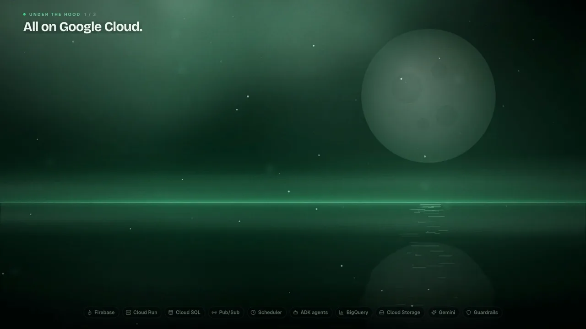
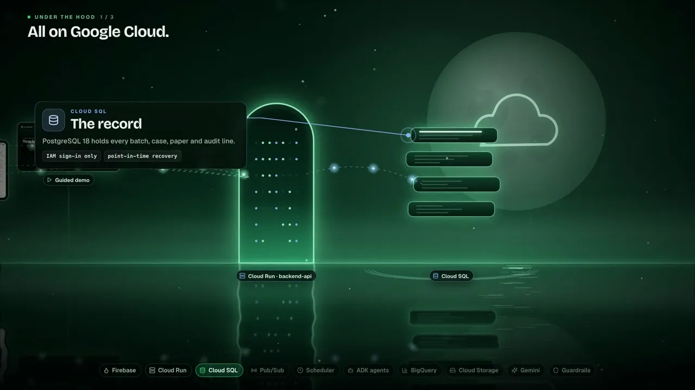
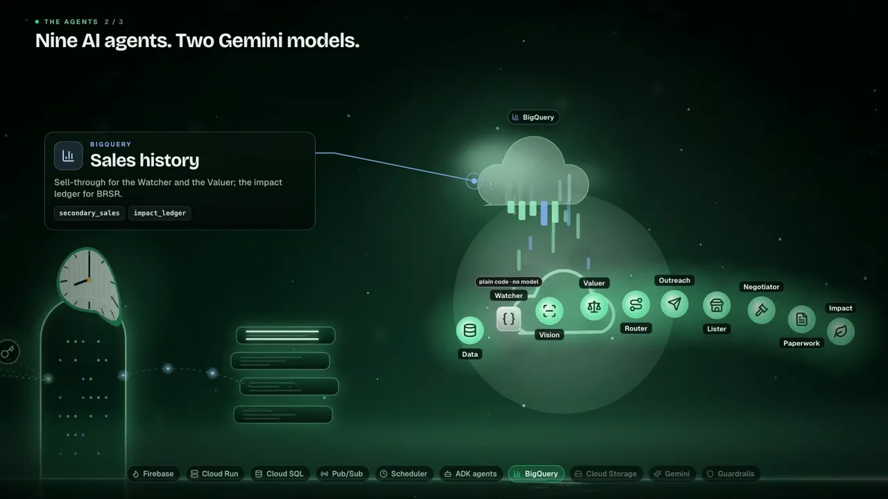
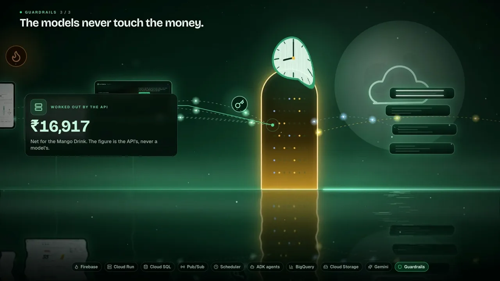
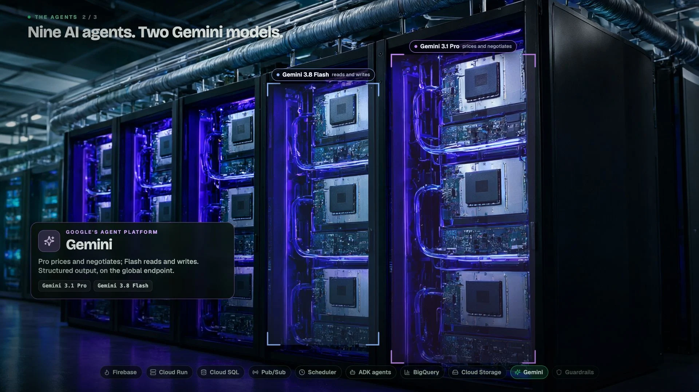
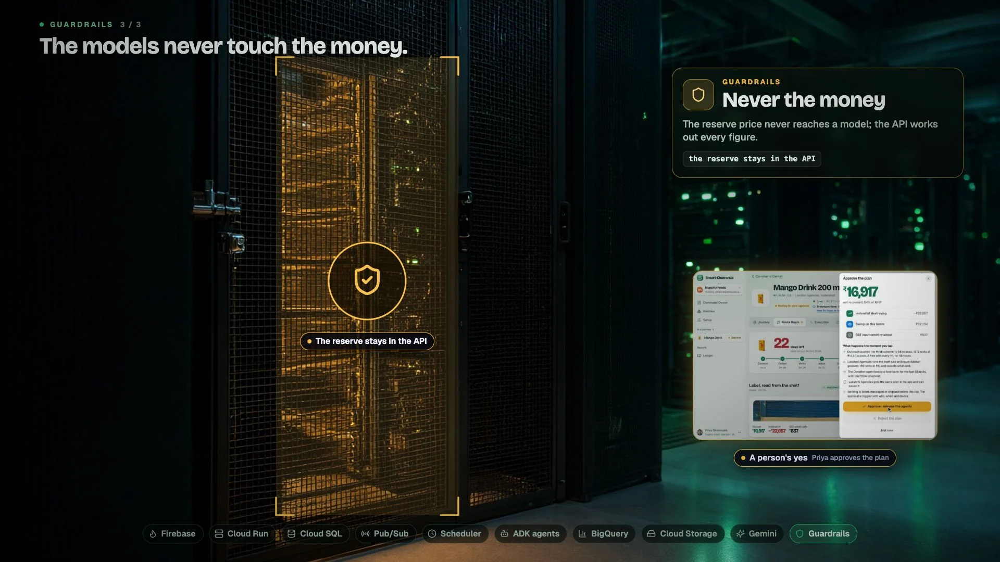
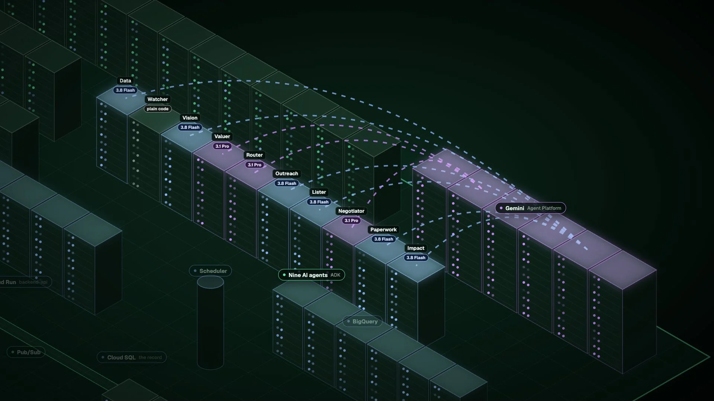
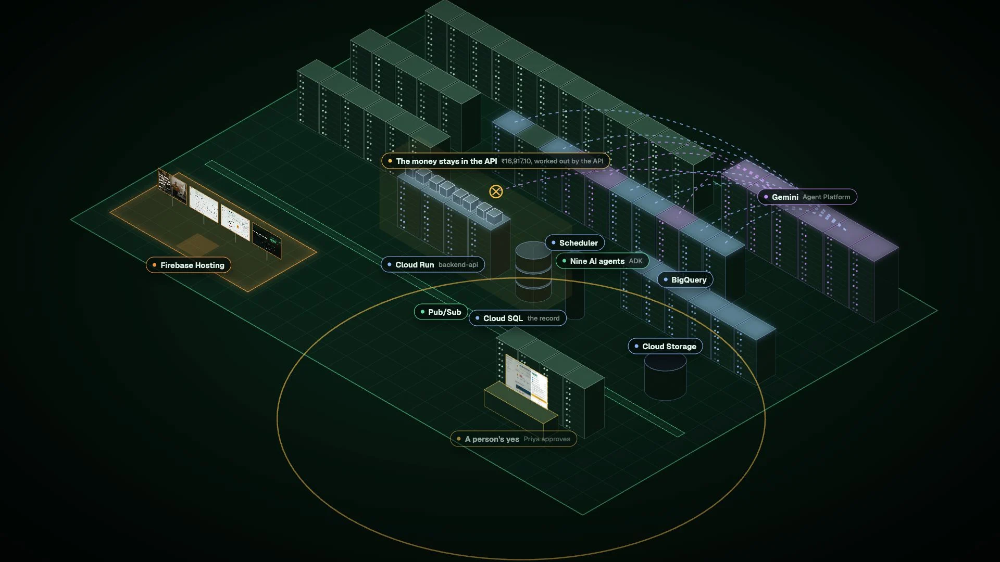
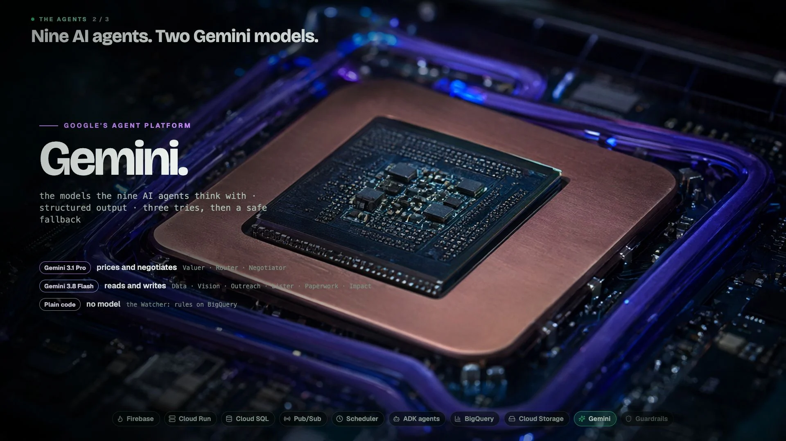
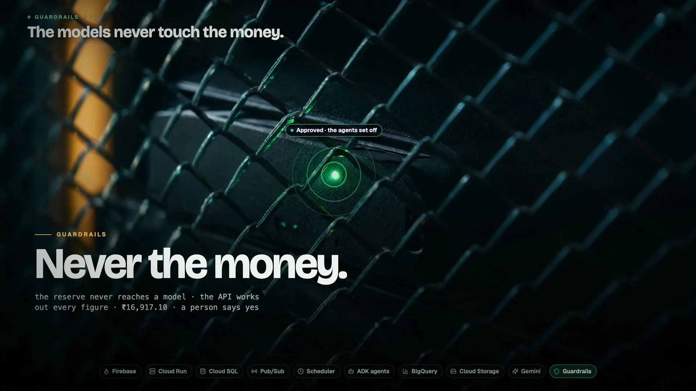

“I want the scenes and animation and effects to be more better and professional, think of Google Cloud Data center.” “I need animations and motion effects.”Your notes on cut 11's architecture scene (0:22.5 to 0:56)
Each concept is a motion test of the scene's first two lines, “Under the hood, it's all Google Cloud. Four apps on Firebase, one API on Cloud Run, Cloud SQL as the record.”, with the real voice and its sound. Two stills show its later beats: the agents with their Gemini models, and the money behind its guardrail with a person's yes. All three are built in Remotion. A and C put their motion graphics over real camera moves (Qwen-Image plates, LTX, all on this Mac).




A real camera moves through a hyperscale data centre at night, and the stack is laid onto its racks as the voice names each part, the way a keynote shows its infrastructure. Every graphic is tracked to its rack and rides the camera's move.


One slow real camera move a shot, graphics tracked onto it, flash-pushes between shots, light sweeps, cut 10's notes.
The hall's air, fans rising as racks light, relay clicks, a chime for each part, fibre zips.
About eight more plates and camera moves (Qwen-Image and LTX, about 1.7 hours on this Mac), each reviewed, then the tracking and the composition.
Generated footage can bend a rack or invent a sign, so each clip is checked and some are made again. A tracked graphic can slip a few pixels on a fast move.
The data centre drawn as one isometric floor plan in Smart-Clearance's greens, built and lit in motion, the way Google Cloud's own explainers draw a system. Every frame is drawn, so it shows how the parts connect, not only what they are called.


One continuous camera over one plan: draw-ons, extrusions on springs, light sweeps, bloom, packets with trails.
Soft plucks as each part rises, a low hum, whooshes on the glides, a swell on the yes.
The plan drawn in full and the camera laid on the voice, all in Remotion. No generated footage, so any change is quick.
It is a drawing, not footage. The rest of the film is live action, so this scene reads as a diagram, as cut 11's did, but in the brand's own look.
A product film shot in macro inside the machines: fibres, server sleds, a TPU under its cold plate, a locked cage. Each part of the stack is set large as the voice names it, with light running through the hardware.


Slow macro moves and rack focus, large type rising out of a mask with a light passing across it, light pulses on the fibres.
Close and tactile: a fibre's whine, a sled's click, coolant, a lock, a pure tone for the yes.
About seven more macro plates and moves (about 1.5 hours), and large type for every beat.
The most cinematic of the three, but it names the parts more than it shows how they connect. Macro footage can melt fine detail.
| A · The data hall | B · The blueprint | C · Inside the machine | |
|---|---|---|---|
| Looks like | Live action in a real data centre | An isometric explainer of a data centre | A macro product film |
| Shows how parts connect | Partly: calls and pulses between racks | Fully: one plan, every link drawn | Little: one part at a time |
| Motion and effects | Real camera moves with tracked graphics | Everything animated and timed to the voice | Rack focus, light through hardware, large type |
| Matches the rest of the film | Closely: live action, like the people's scenes | Less: a drawing among live action | Closely: live action |
| Risk | Generated racks can bend; tracking can slip | Lowest: nothing generated | Macro detail can melt |
| Build | About 1.7 h of generation, then tracking | Remotion only | About 1.5 h of generation |
Recommended: A, the data hall. It is the data centre itself, filmed, which is what your note asks for, and it keeps the live action of the rest of the film. The motion graphics carry the stack, tracked onto real racks, with cut 10's notes. Both camera moves made for this test came out clean on the first take, and the graphics stayed on their racks through a 1.4× push. Pick B if the scene should show how every part connects in one picture and stay the quickest to change. Pick C if it should feel most like a hardware launch.
Pick A, B or C in the chat, or say what to change. Only the picked concept is built, as cut 12, at 238 to 239 seconds.